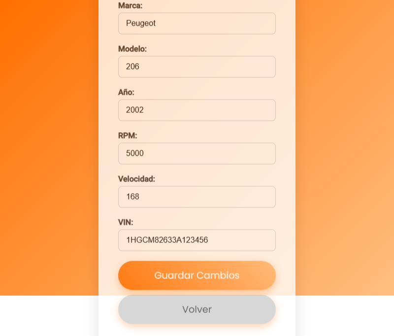

src/app/editar-vehiculo/editar-vehiculo.component.ts

Componente para editar los datos de un vehículo existente.
Permite modificar la marca, modelo, año, VIN, RPM, velocidad y revisión. Valida la existencia de un token para acceso seguro. Carga los datos actuales del vehículo desde la API y los guarda tras edición.
OnInit
| selector | app-editar-vehiculo |
| standalone | true |
| imports |
CommonModule
FormsModule
|
| styleUrls | ./editar-vehiculo.component.css |
| templateUrl | ./editar-vehiculo.component.html |
Properties |
Methods |
constructor(route: ActivatedRoute, router: Router, http: HttpClient)
|
||||||||||||||||
|
Inyección de dependencias del enrutador, rutas activas y cliente HTTP.
Parameters :
|
| cargarVehiculo |
cargarVehiculo()
|
|
Carga los datos del vehículo desde la API usando el ID actual. Realiza una petición HTTP GET al backend.
Returns :
void
|
| guardarEdicion |
guardarEdicion()
|
|
Guarda los cambios realizados al vehículo actual. Realiza una petición HTTP PUT con los nuevos datos al backend.
Returns :
void
|
| ngOnInit |
ngOnInit()
|
|
Hook del ciclo de vida que se ejecuta al inicializar el componente. Verifica si hay un token válido y, si existe un ID, carga los datos del vehículo.
Returns :
void
|
| volver |
volver()
|
|
Redirige al usuario a la vista de listado de vehículos sin realizar cambios.
Returns :
void
|
| tokenValido |
Default value : false
|
|
Indica si el token de autenticación existe y es considerado válido. |
| vehiculo |
Type : literal type
|
Default value : {
marca: '',
modelo: '',
year: null,
vin: '',
rpm: null,
velocidad: null
}
|
|
Objeto que almacena los datos del vehículo que se van a editar. |
| vehiculoId |
Type : number
|
|
ID del vehículo a editar, obtenido desde los parámetros de la ruta. |
import { Component, OnInit } from '@angular/core';
import { ActivatedRoute, Router } from '@angular/router';
import { HttpClient } from '@angular/common/http';
import { CommonModule } from '@angular/common';
import { FormsModule } from '@angular/forms';
/**
* 
* <br>
* Componente para editar los datos de un vehículo existente.
*
* Permite modificar la marca, modelo, año, VIN, RPM, velocidad y revisión.
* Valida la existencia de un token para acceso seguro.
* Carga los datos actuales del vehículo desde la API y los guarda tras edición.
*/
@Component({
selector: 'app-editar-vehiculo',
standalone: true,
imports: [CommonModule, FormsModule],
templateUrl: './editar-vehiculo.component.html',
styleUrls: ['./editar-vehiculo.component.css']
})
export class EditarVehiculoComponent implements OnInit {
/**
* ID del vehículo a editar, obtenido desde los parámetros de la ruta.
*/
vehiculoId!: number;
/**
* Objeto que almacena los datos del vehículo que se van a editar.
*/
vehiculo: {
marca: string;
modelo: string;
year: number | null;
vin: string;
rpm: number | null;
velocidad: number | null;
revision?: string;
} = {
marca: '',
modelo: '',
year: null,
vin: '',
rpm: null,
velocidad: null
};
/**
* Indica si el token de autenticación existe y es considerado válido.
*/
tokenValido = false;
/**
* Inyección de dependencias del enrutador, rutas activas y cliente HTTP.
* @param route - Proporciona acceso a los parámetros de la ruta activa.
* @param router - Permite la navegación entre rutas.
* @param http - Cliente HTTP para realizar peticiones a la API.
*/
constructor(
private route: ActivatedRoute,
private router: Router,
private http: HttpClient
) { }
/**
* Hook del ciclo de vida que se ejecuta al inicializar el componente.
* Verifica si hay un token válido y, si existe un ID, carga los datos del vehículo.
*/
ngOnInit(): void {
const token = localStorage.getItem('token');
if (!token) {
this.router.navigate(['/login']);
return;
}
this.tokenValido = true;
const id = this.route.snapshot.paramMap.get('id');
if (id) {
this.vehiculoId = +id;
this.cargarVehiculo();
} else {
console.error('ID del vehículo no encontrado');
}
}
/**
* Carga los datos del vehículo desde la API usando el ID actual.
* Realiza una petición HTTP GET al backend.
*/
cargarVehiculo(): void {
this.http.get(`https://anthonyx82.ddns.net/taller/api/mis-vehiculos/${this.vehiculoId}`).subscribe({
next: (data: any) => {
this.vehiculo = data;
},
error: (error) => {
console.error('Error al cargar el vehículo:', error);
}
});
}
/**
* Guarda los cambios realizados al vehículo actual.
* Realiza una petición HTTP PUT con los nuevos datos al backend.
*/
guardarEdicion(): void {
const vehiculoActualizado = {
marca: this.vehiculo.marca,
modelo: this.vehiculo.modelo,
year: this.vehiculo.year,
vin: this.vehiculo.vin,
rpm: this.vehiculo.rpm,
velocidad: this.vehiculo.velocidad,
revision: this.vehiculo.revision
};
this.http.put(`https://anthonyx82.ddns.net/taller/api/editar-vehiculo/${this.vehiculoId}`, vehiculoActualizado).subscribe({
next: () => {
console.log('Vehículo actualizado correctamente');
this.router.navigate(['/mis-vehiculos']);
},
error: (error) => {
console.error('Error al actualizar vehículo:', error);
}
});
}
/**
* Redirige al usuario a la vista de listado de vehículos sin realizar cambios.
*/
volver(): void {
this.router.navigate(['/mis-vehiculos']);
}
}
<div class="edit-vehicle-container">
<div class="edit-vehicle-card">
<h2>Editar Vehículo</h2>
<form (ngSubmit)="guardarEdicion()">
<div class="input-group">
<label for="marca">Marca:</label>
<div class="input-wrapper">
<input type="text" id="marca" [(ngModel)]="vehiculo.marca" name="marca" required />
</div>
</div>
<div class="input-group">
<label for="modelo">Modelo:</label>
<div class="input-wrapper">
<input type="text" id="modelo" [(ngModel)]="vehiculo.modelo" name="modelo" required />
</div>
</div>
<div class="input-group">
<label for="year">Año:</label>
<div class="input-wrapper">
<input type="number" id="year" [(ngModel)]="vehiculo.year" name="year" required />
</div>
</div>
<div class="input-group">
<label for="rpm">RPM:</label>
<div class="input-wrapper">
<input type="number" id="rpm" [(ngModel)]="vehiculo.rpm" name="rpm" required />
</div>
</div>
<div class="input-group">
<label for="velocidad">Velocidad:</label>
<div class="input-wrapper">
<input type="number" id="velocidad" [(ngModel)]="vehiculo.velocidad" name="velocidad" required />
</div>
</div>
<div class="input-group">
<label for="vin">VIN:</label>
<div class="input-wrapper">
<input type="text" id="vin" [(ngModel)]="vehiculo.vin" name="vin" required />
</div>
</div>
<button type="submit">Guardar Cambios</button>
</form>
<button class="secondary-btn" (click)="volver()">Volver</button>
</div>
</div>
./editar-vehiculo.component.css
/* Contenedor principal */
.edit-vehicle-container {
display: flex;
justify-content: center;
align-items: center;
height: 100vh;
background: linear-gradient(135deg, #ff6f00, #ffbf80);
}
/* Tarjeta del formulario */
.edit-vehicle-card {
background: white;
padding: 40px;
border-radius: 15px;
box-shadow: 0px 10px 30px rgba(0, 0, 0, 0.15);
text-align: center;
width: 100%;
max-width: 400px;
animation: fadeIn 0.8s ease-in-out;
}
.edit-vehicle-card h2 {
font-size: 2rem;
font-weight: 700;
color: #333;
margin-bottom: 20px;
}
/* Grupo de inputs */
.input-group {
text-align: left;
margin-bottom: 20px;
}
.input-group label {
font-weight: 600;
display: block;
margin-bottom: 5px;
color: #333;
}
/* Input con estilo */
.input-wrapper {
position: relative;
display: flex;
align-items: center;
}
.input-wrapper input {
width: 100%;
padding: 12px 15px;
border-radius: 8px;
border: 1px solid #ccc;
font-size: 1rem;
transition: all 0.3s ease-in-out;
}
.input-wrapper input:focus {
border-color: #ff6f00;
box-shadow: 0 0 5px rgba(255, 111, 0, 0.4);
}
/* Botones */
button {
background: linear-gradient(45deg, #ff6f00, #ffbf80);
color: white;
font-size: 1.2rem;
padding: 15px;
border-radius: 50px;
border: none;
cursor: pointer;
width: 100%;
box-shadow: 0px 5px 15px rgba(255, 111, 0, 0.4);
transition: all 0.3s ease-in-out;
}
button:hover {
background: #ff6f00;
transform: scale(1.05);
}
/* Botón secundario */
.secondary-btn {
background: #ccc;
color: #333;
margin-top: 10px;
}
.secondary-btn:hover {
background: #aaa;
}
/* Animación de entrada */
@keyframes fadeIn {
from {
opacity: 0;
transform: translateY(-20px);
}
to {
opacity: 1;
transform: translateY(0);
}
}
/* Responsividad */
@media (max-width: 480px) {
.edit-vehicle-card {
padding: 30px;
}
}